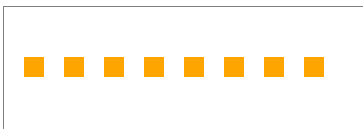
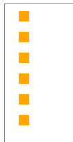
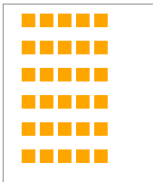

Loops & Drawing
Video LessonLoops are useful when drawing a pattern.
Rows | Columns | Grids
Rows
To draw a row of items, use a loop to generate the changing x-coordinates of the items.
Example
// Without a loop
ctx.fillRect(20, 50, 20, 20);
ctx.fillRect(60, 50, 20, 20);
ctx.fillRect(100, 50, 20, 20);
ctx.fillRect(140, 50, 20, 20);
ctx.fillRect(180, 50, 20, 20);
ctx.fillRect(220, 50, 20, 20);
ctx.fillRect(260, 50, 20, 20);
ctx.fillRect(300, 50, 20, 20);
// With a loop
for (let x = 40; x <= 360; x += 40) {
ctx.fillRect(x, 50, 20, 20);
}

Columns
To draw a column of items, use a loop to generate the changing y-coordinates of the items.
Example
// Without a loop
ctx.fillRect(20, 10, 15, 15);
ctx.fillRect(20, 40, 15, 15);
ctx.fillRect(20, 70, 15, 15);
ctx.fillRect(20, 100, 15, 15);
ctx.fillRect(20, 130, 15, 15);
ctx.fillRect(20, 160, 15, 15);
// With a loop
for (let y = 10; y <= 160; y += 30) {
ctx.fillRect(20, y, 15, 15);
}

Grids
To draw a grid of items, use nested loops to generate the changing x-coordinates and y-coordinates of the items.
Example
// Without a loop
ctx.fillRect(20, 10, 15, 15);
ctx.fillRect(20, 40, 15, 15);
ctx.fillRect(20, 70, 15, 15);
ctx.fillRect(20, 100, 15, 15);
ctx.fillRect(20, 130, 15, 15);
ctx.fillRect(20, 160, 15, 15);
ctx.fillRect(40, 10, 15, 15);
ctx.fillRect(40, 40, 15, 15);
ctx.fillRect(40, 70, 15, 15);
ctx.fillRect(40, 100, 15, 15);
ctx.fillRect(40, 130, 15, 15);
ctx.fillRect(40, 160, 15, 15);
ctx.fillRect(60, 10, 15, 15);
ctx.fillRect(60, 40, 15, 15);
ctx.fillRect(60, 70, 15, 15);
ctx.fillRect(60, 100, 15, 15);
ctx.fillRect(60, 130, 15, 15);
ctx.fillRect(60, 160, 15, 15);
ctx.fillRect(80, 10, 15, 15);
ctx.fillRect(80, 40, 15, 15);
ctx.fillRect(80, 70, 15, 15);
ctx.fillRect(80, 100, 15, 15);
ctx.fillRect(80, 130, 15, 15);
ctx.fillRect(80, 160, 15, 15);
ctx.fillRect(100, 10, 15, 15);
ctx.fillRect(100, 40, 15, 15);
ctx.fillRect(100, 70, 15, 15);
ctx.fillRect(100, 100, 15, 15);
ctx.fillRect(100, 130, 15, 15);
ctx.fillRect(100, 160, 15, 15);
// With nested loops
for (let x = 20; x <= 100; x += 20) {
// For each x value, draw a column
for (let y = 10; y <= 160; y += 30) {
ctx.fillRect(x, y, 15, 15);
}
}

Summary
- Loops may be used to draw patterns using less code.
- Nested loops may be used to draw grids.